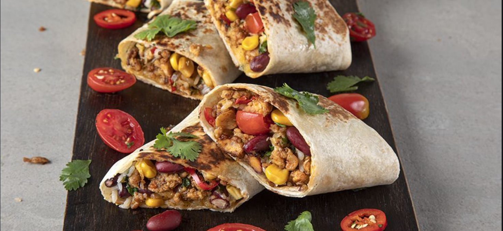

Burritos

Description
Saucy, spicy chicken burritos are easy to assemble and quick to bake.
Required Ingredients
- 1 pound skinless boneless chicken breasts
- 2 teaspoons Gay Lea Butter
- 1 pinch Pinch salt
- 1 pinch Pinch pepper
- 2 cups shredded Ivanhoe Old Cheddar
- ⅔ cup Gay Lea Sour Cream
- 1 cup diced green pepper
- ⅓ cup salsa
- ½ cup sliced black olives (Optional)
- 1 jalapeno pepper, seeded and minced
- 2 tablespoons chopped fresh cilantro
- 4 large flour tortillas
Steps
- In medium container with lid, or in large ziptop bag, combine steak slices, Mojo and 1 tsp. Adobo; transfer to refrigerator. Marinate at least 2 hours, or up to 24 hours. Drain steak, discarding marinade. Bring meat to room temperature.
- Heat 1 tbsp. oil in large skillet over high heat. Add onions; cook, stirring occasionally, until starting to brown, about 3 minutes. Add peppers to pan. Cook, stirring occasionally, until starting to brown, about 3 minutes more. Season vegetables with sazonador total and adobo; transfer to large serving platter. Cover vegetables with foil to keep warm.
- CHeat remaining oil in skillet over high heat. Add beef; cook, in batches, until brown on all sides, about 10 minutes. Transfer meat to serving platter.
- To serve, spoon meat and vegetables into center of warm tortillas. Add guacamole, pico de gallo, sour cream and salsita, if desired; wrap and enjoy.
Return to Main Page